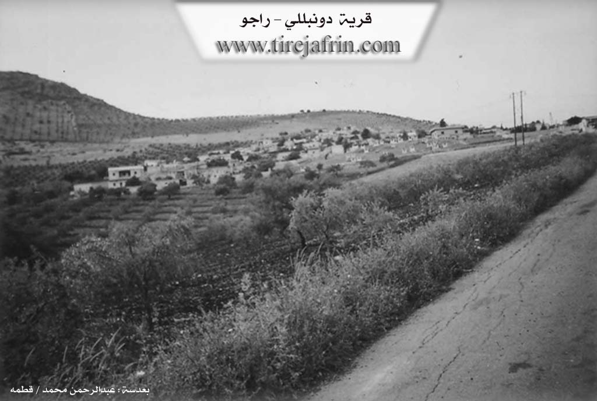

General Information
Nahiya (Subdistrict)
Reco
Also Known As
Al-Amsiya, Demîlo, Dimilya, Dombllali, Domelya, Domilia, Dumilya, Dêmilo, Dûmilya, الأمسية, دمليو, دومبللي, دميلو
Tribes
Berazî, Cûmbelat, Dimilî, Donbolî, Dumbilî, Milî, Reşwan, Reşî, Şêxan
Families, Clans, etc.
Babo, Bekû, Ebdê Mistoyê, Elçûçê, Erebê Hemşerikê, Evdî Misto, Hemkelekê, Hemû, Hemûd, Kurê, Kurû, Malê Dêxlê, Mam, Mamkûran, Mele, Mem, Memê, Mihbecan, Mihbecê, Os, Têşî, Us, Uskê, Znûkê, Zûkê, Çakîşê, Çekîş

Photos

Basic Information about Dumilya
Source: Ax û Welat
Etymology: Named Dimiliya after the Dimilî (Zaza) tribe and dialect of the founders
Foundation Date/Period: 500 years ago
Number of Caves: 3
Hills: Bena Heşîd, Qirik
Shrines: Kevirê Hêvê
Ruins: Sennar, Tila Cernasê
Other Landmarks: Delîb
Summaries
I. Summary from TirejAfrin Site (English) of Dumilya
Source: https://www.tirejafrin.com/site/kura%20afrin%20%20%20Reco%20-%20Dumilya.htm
The following is stated in the book جبل الكرد (عفرين) دراسة جغرافية Çiyayê Kurmênc (Efrîn): A Geographical Study by د. محمد عبدو علي Dr. Mihemed Ebdo Elî:
Dumilya Dumbilî El-Emsiye
/2148 inhabitants - 232 houses - 12 km - 600 mDumilya: This is a corruption of the name Dumbilî (or Donbolî), which is the name of a Kurdish tribe found in BotanLerch, p.48/. They used to live under Safavid rule, then migrated to the Ottoman part of Kurdistan, settled west of Diyarbakir, and established a semi-independent emirate in the city of Palo and its surroundings /Koranî Dictionary/. Dumbil in the Kurdish language means "hedgehog."
It is stated in the Kitab al-Masalik that the Donbolî were a people inhabiting the mountains of Maqlub and Mukhtar. Persecution led them to leave for the regions of Mosul and Azerbaijan, and thanks to their cunning, they managed to establish an independent administration in Kurdistan and Azerbaijan. The Sharafnama says regarding them that they are of the Êzîdî sect. As for Emîn Zekî (Vol 1, p.403), he says that this tribe is from the Berazî. Wesfî Zekerya says of them that they are from the Milî tribe (p.664). As for the Arabized name (El-Emsiye), it is a designation by the Arabization committee.
It is a medium-sized village located at the feet of the southeastern slope of Çiyayê Ben, situated 2 km west of the village of Behdîna.
The following is stated in the book عفرين .... نهرها وروابيها الخضراء Efrîn... Her River and Her Green Hills by the writer عبدالرحمن محمد Ebdulrehman Mihemed from the village of Qetme:
Dumilya: A village in Çiyayê Kurmênc administratively following the Reco township, Efrîn region, Heleb governorate. It is a large village located on the southern slope (a mountainous rise and slope) of the central part of the mentioned mountain.
It is bordered to the north by a high, rugged mountain chain and the village of Derwîş Obasi; to the south by a slope, a valley, and the villages of Korkan Jêrîn and Korkan Jorîn; to the west by a high, rugged mountain chain and the village of Qudê; and to the east, at a distance of 500 meters, by the village of Behdîna.
The number of its houses reaches approximately 200, and its age is approximately 400 years. Its old residences are made of stone and mud with flat wooden roofs, while modern cement buildings have spread to the west, south, and east. An electricity network is available, as well as a water network from an artesian well belonging to the state. In the past, the village drank from a Roman well. The village contains a primary school and a mosque. The village is connected to the township and the region by paved roads. The residents work in rain-fed agriculture (olives, vines, grains, and other fruit trees) alongside the raising of sheep and goats. The village is considered one of the beautiful villages in terms of construction and location.
Village Mukhtar: Bekir Elî Bekir
Sources:
Book: جبل الكرد (عفرين) دراسة جغرافية Çiyayê Kurmênc (Efrîn): A Geographical Study by د. محمد عبدو علي Dr. Mihemed Ebdo Elî.
Book: عفرين .... نهرها وروابيها الخضراء Efrîn... Her River and Her Green Hills by عبدالرحمن محمد Ebdulrehman Mihemed from the village of Qetme.
Preparation and Execution:
Manager of the Tirej Efrîn site: Ebdulrehman Hacî Osman
20/12/2013
II. Summary of Dumilya from Khalil Sino
Source: https://www.youtube.com/watch?v=_dyFFD4VD54
The documentary provides an oral history of the village of Dimîlya in the Afrin region, narrated through the memories of its elders, particularly Nazê, Ehmed, Emîne, Cemîl, and Mehbet. While specific founding dates are not established, the elder Ehmed alludes to a deep historical presence, mentioning that populations have been in the area for over a thousand years, dating back to interactions with Turkic peoples. He describes the early settlement as consisting of ruins (kavil) and caves before modern houses were built.
The social structure of Dimîlya includes members of the Reşî tribe, a branch of the Reşwan confederation, as confirmed by the young musician Xelîl. The elders paint a vivid picture of a hard but communal past (cefa), defined by manual labor and distinct agricultural phases. Ehmed notes that in his youth, the landscape was not dominated by olive trees as it is today; instead, the plains were filled with vineyards (rez), wheat (genim), barley (garis), cotton (pembû), and zîwan. He specifically highlights the era of the Pezê Reş (Black Sheep), noting that flocks were almost entirely black before other breeds appeared.
Daily life revolved around specific local landmarks. Mehbet and Nazê recall daily chores such as fetching water and collecting wood at locations like Zingo, Kindê, and Çitpiyo. Zingo is specifically noted for having a pipe (borî), indicating a water source. Residents also traveled to the nearby area of Hewîş. The women describe baking bread on a sêl (griddle) and spinning wool with a teşî (spindle) to make clothes and rugs.
Marriage customs were strictly traditional. Mehbet and Nazê emphasize that couples rarely saw one another before the wedding day. Mehbet recounts that her bride price (qeleng) was 4,000 (likely Syrian pounds), and she received a quilt and a set of clothes from her father, Mistefê Ûqizê. Nazê shares a personal story about her husband, Xelîl, noting that she only saw him from a distance before their marriage, yet she speaks fondly of the affection that grew between them.
The village is also home to artisans and musicians. Şe'ban Bavê Ehmed has served as the village barber for twenty years. The younger generation is represented by Xelîl, a singer who performs traditional Efrîn songs and weddings, preserving the region's musical heritage. The documentary concludes with a musical performance by a guest, Mistefa from the neighboring village of Kerkê Şêran.
II. Summary of Dumilya from Ax û Welat
Source: https://www.youtube.com/watch?v=-qNzpMPPfBM
The village of Dimiliya, located in the Mabeta district of the Afrin region, holds a distinct history as a settlement of Zaza Kurds. According to local oral history, the village was founded approximately 500 years ago by three individuals: two brothers named Mam and Us, and their companion or kinsman, Mele. These founders migrated from Çiyayê Maziya in Bakurê Kurdistanê (specifically the Mêrdîn province). They passed through Ehrez before settling in the current location, which was then a dry, mountainous area featuring three caves and no natural springs. The village name, Dimiliya, is derived from their tribe, the Dimilî, and their original Zazakî dialect, though current residents primarily speak Kurmanji while retaining a strong memory of their Zaza roots.
The social structure of Dimiliya expanded from the original founders to include numerous other families who joined over the centuries. Residents listed prominent families such as Znûkê, Çakîşê, Kurû, Hemkelekê, Hemû, Elçûçê, Memê, Mihbecê, and Bekû. The village is situated beneath a mountain slope known as Bena Heşîd. Historically, the village maintained its independence and cohesion despite being surrounded by the influence of the Şêxo tribe, which held power in neighboring villages like Badîna and Me'mela.
The village is home to significant communal and sacred landmarks. Central to their spiritual life is Kevirê Hêvê (Stone of the Moon/Hope). This shrine is a specific rock where villagers gather during droughts to sacrifice animals (specifically chickens) and pray for rain. It is also a site for healing; a resident recounted a story of being cured of a severe eye infection after her mother performed a sacrifice at Kevirê Hêvê on a Wednesday.
Another central feature of village life was the "Gol" (lake/pond), a man-made reservoir created by the founders to catch rainwater, as the area lacked springs. For generations, this pond served as the primary water source for drinking, washing, and livestock, and was a place where children learned to swim. Additionally, the village preserves a large antique stone olive press known as the Delîb. This heavy stone was transported by wagon nearly a century ago from Binê Sennarê or Tila Cernasê by the ancestors of residents like Hesen. Before modern machinery, this press, once owned by Evdî Misto, was the center of olive oil production and wheat grinding, serving as a social hub where women would gather to sing and work. Today, the village has modernized with a local olive processing factory, and many residents who had moved to Heleb have returned to Dimiliya to work the land.
II. Summary of Dumilya from Ax û Welat 2
Source: https://www.youtube.com/watch?v=N_1jdYTm2B8
The village of Dimiliya is situated in the Mabata district of the Efrîn region. Its history began approximately five centuries ago with the arrival of three founders named Mem, Os, and Mele. These men were Zaza Kurds who migrated from Çiyayê Maziya within the Mêrdîn province of Bakurê Kurdistan. Mem and Os were brothers while Mele was their cousin. They initially passed through Ehrezê before settling in the current location. Upon their arrival they lived in three caves located near the center of the modern village. These caves are situated close to one another and served as the initial shelter for the founders who were shepherds living off their flocks.
The social structure of Dimiliya is defined by its roots in the Dimilî tribe. While the founders established the first presence many other families subsequently joined the community. The transcript identifies these distinct lineages as Zûkê, Çekîş, Kurê, Hemkelekê, Hemû, Elçûçê, Memê, Mihbecan, and Bekû. Despite being surrounded by the powerful Şêxan tribe and their aghas located in neighboring Badîna and Me'mela the people of Dimiliya maintained their independence and did not submit to the authority of outside feudal lords. The villagers emphasize their unity and the fact that unlike other villages they have never had internal blood feuds.
Religious and spiritual life in the village centers around a sacred rock known as Kevirê Hêvê. Although the village lacks a traditional built shrine or tomb the residents treat this stone with reverence. During times of drought the community gathers around Kevirê Hêvê to sacrifice animals such as chickens and pray for rain. The blood of the sacrifice is poured onto the stone. Residents also visit this site to pray for healing from illnesses.
Economic and daily life historically revolved around a large central pond called the Gol which collected rainwater. This pond served as the primary water source for washing, livestock, and swimming for generations until the villagers began digging private wells about forty or fifty years ago. Another significant historical artifact is the Delîb, a massive stone olive press. This heavy stone was transported by manual labor from Tilê Cir-Cirê near Sernarê over 150 years ago by the ancestors of the current residents. It was originally used for an olive press owned by Ebdê Mistoyê and later for crushing grain. Woodwork for these operations was historically crafted by Malê Dêxlê from Şiyê. Following the revolution many families who had migrated to Heleb returned to Dimiliya to revitalize the local economy, particularly the olive oil industry.
II. Summary of Dumilya from Multi Channel
The documentary explores the history of Dimiliya, a village in the Mabeta district. An elder named Hemer details the origins of the settlement. The founders were two brothers named Mame and Ûse who migrated from the Bîngol and Çiyayê Mazî regions approximately seven hundred to eight hundred years ago. The village name derives from their origins, as they were associated with the Kirka people from that eastern region. Upon arriving, the brothers initially lived in caves. The elder notes there were eight such caves used as dwellings for five centuries before traditional mud houses were constructed.
The village has strong ties to the Cûmbelat tribe. Following the arrival of the two founding brothers, their descendants established the Mamkûran and Uskê family lineages. As the village grew, other families settled in the area, including the Hemûd, Babo, and Têşî families. The village also experienced intermarriage with Arab neighbors; the elder notes a specific connection to the Erebê Hemşerikê lineage, where local women married into these households. The elder also provides context for the broader region, noting the arrival of the French in the nineteen twenties and explaining how the city of Efrîn developed around early settlements like the one belonging to the Fêyo family. He weaves in broader regional history involving figures like Mihemed Elî Başa and the Battle of Çenaxqaleyê.
Dimiliya is situated in an arid rocky area with rich mixed soil. Because there are no natural springs, the village relies heavily on rain for agriculture. Residents cultivate wheat, barley, and chickpeas alongside olive, apple, apricot, and fig trees. The community draws water from cisterns and one ancient well named Bîra Asar. The village features a distinctive local landmark called Av Kevir, which consists of fourteen stones arranged in a row. A local resident clarifies that Av Kevir is not a religious shrine but a symbolic site. In the past, when autumn rains failed, villagers would gather at these stones, sacrifice an animal, share a communal meal, and pray to God for rain.
Traditional daily life remains visible in Dimiliya. Women continue to cook regional dishes over open wood fires in their courtyards, and they recall using historical tools like the teşî for spinning wool. The community works to preserve its cultural heritage through the arts. A local folklore dance group called Koma Dimiliya performs at celebrations like Newroz in Meydankê, while a young local singer named Cîger composes and performs original songs, ensuring that the artistic spirit of the village endures.
Transcriptions and Subtitles
| Source | Video | Subtitles | Transcript |
|---|---|---|---|
| Ax û Welat 1 | Watch Video | Download SRT | View Transcript |
| Ax û Welat 2 | Watch Video | Download SRT | View Transcript |
| Khalil Sino 1 | Watch Video | Download SRT | View Transcript |
| Multi Channel 1 | Watch Video | Download SRT | View Transcript |
Foundation/Origin Information of Dumilya
founded by three Zaza individuals who migrated from the Mazîya mountains in the Mardin province of Northern Kurdistan. The founders were two brothers, Ma'm and Us, and their maternal uncle, Mele, who traveled via the Ahras/Ehrez route.
Source: Ax û Walat Transcript
founded by three Zaza-speaking relatives from the Dimilya tribe who migrated from the Mazîya Mountain region in Northern Kurdistan. The founders—brothers Mem and Os, along with their maternal cousin Mela—were shepherds who crossed the Ahrez River and settled at the site after discovering a cave with a water source. At the time of their arrival, the area was also inhabited by the Sheikhan tribe.
Source: Ax û Walat Transcript
Possible Village Name Meaning of Dumilya
Damliya: A corruption of the name Donbllali, which is the name of a Kurdish tribe found in Botan. Danbal in Kurdish means hedgehog.
Source: TirejAfrin Site
named it after their Dimilî tribe.
Source: Ax û Walat Transcript
V. Links
- Tirej Afrin:
https://www.tirejafrin.com/site/kura%20afrin%20%20%20Reco%20-%20Dumilya.htm - Ax û Welat:
https://www.youtube.com/watch?v=-qNzpMPPfBM - Jawlat:
https://www.youtube.com/watch?v=a9-IIcV3ve8 - Drone:
https://www.youtube.com/watch?v=Dsh6m4M0SVk - Link:
https://www.youtube.com/watch?v=f6OFLb0kDEI - Video:
https://www.youtube.com/watch?v=YU95O7b9k38 - Link:
https://www.youtube.com/watch?v=42-cFr2iXfY - Link:
https://www.youtube.com/watch?v=N_1jdYTm2B8 - Khalil Sino:
https://www.youtube.com/watch?v=_dyFFD4VD54 - Multi Channel:
https://youtu.be/nX8oFOJMOL4?si=mrDqm7HRjwB_MXvS